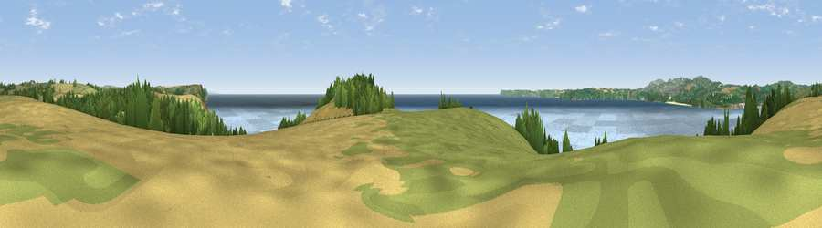

Viewpoint near Polruan
#5943 in England · top 13% of its area beats it · near PolruanThe view, rendered

A 360° render of this exact spot computed from the terrain model, tree cover and land cover — summer colours, afternoon light, calibrated against photographs of famous viewpoints. Real trees, hedges and buildings will differ in detail.
The panorama
Grey silhouette: terrain skyline in each direction (720 bearings, Earth curvature and refraction included). Dashed green: skyline with trees (+15 m) and buildings (+8 m) as obstacles. Blue strip: how far the ground is visible on each bearing.
Where the view opens
Wedge length = distance to the farthest visible ground on that bearing (vegetation-aware). Rings at 10, 25 and 50 km.
What fills the view
52% water · 22% grassland · 14% cropland · 11% woodland · 2% built-up
Angular shares of the visible panorama (visual magnitude), not map area. Landscape diversity 0.55 (0–1 Shannon).
Key numbers
More beautiful places nearby
The staircase of upgrades: each row has a higher view potential than everything closer. Driving times are estimates from straight-line distance, calibrated against real road routing — check an actual route before setting out.
| Place | Direction | Drive | Score |
|---|---|---|---|
| Viewpoint near Polruan | E · 4 km | ~9 min | 73.1 |
| Viewpoint near Polruan | E · 4 km | ~10 min | 77.5 |
| Viewpoint near Polruan | ENE · 5 km | ~11 min | 79.4 |
| Pencarrow Head | E · 6 km | ~12 min | 86.0 |
| Viewpoint near Stenalees | NW · 12 km | ~22 min | 88.0 |
| Viewpoint near Crackington Haven | N · 44 km | ~64 min | 88.1 |
| Viewpoint near Combe Martin | NNE · 110 km | ~134 min | 88.9 |
| Holdstone Hill | NNE · 110 km | ~135 min | 90.2 |
50.32300, -4.67861 · source: osm peak · position refined by local search. Computed location — check access rights before visiting.